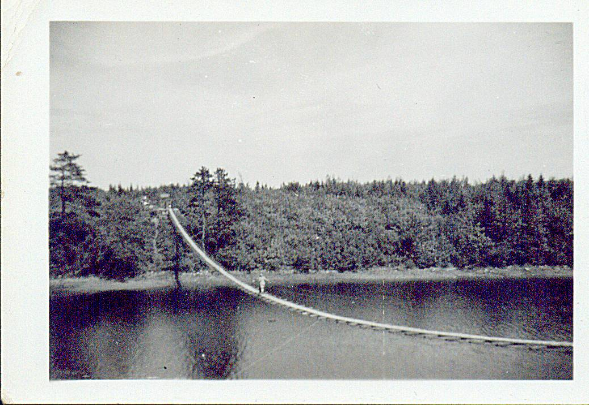

The Family Chronicle
No. 67 April 20, 2004
________________

A suspension bridge spanned the river at Baie St. Anne and was a place to visit on a sunny Sunday afternoon. I am not sure, but this may be Margaret (Glendenning) Gibson crossing the bridge. Photo undated but thought to be in the early 1950’s.
Glenelg
I am indebted to Donald Edge for the following item on Glenelg.
Glenelg Parish: Name,History, 1840 Census
Glenelg in geography is one of the most common palindromes, a name that reads the same backwards and forwards. The original Glenelg in the highlands of Scotland is both a village and a mountainous peninsula and a bay in Ross-Shire that look across the Sound of Sleat to the Isle of Skye. This highland name Glenelg is said to derive from the Gaelic Gleann Seilg, the Glen of Hunting.
There are many other Glenelgs, including a Glenelg village and lake in Nova Scotia, and a Glenelg in Ontario. In the 1830's Lord Glenelg was England's Secretary of State for the Colonies; and his name commonly appears on Australian and New Zealand rivers and street signs.
Our Glenelg Parish is "So named for the native place in Scotland of major McDonald of the 78th Highlanders, a prominent resident, who settled there about 1790."*
Originally a part of Newcastle Parish, the New Brunswick Northumberland County Parish of Glenelg was set up in 1814 and included Nelson, Hardwicke, and a small part of Rogersville. Hardwicke was set up in 1851 as a separate parish, and Rogersville set up in 1881. Glenelg took its final and present form in 1900.
In the 1840 Census the old Glenelg Parish had 237 houses sheltering 244 families; 11 houses were under construction [there were 281 houses in the 1851 Census]. The population was 1351--690 males and 661 females**; there were no residents "of Colour." There were 3828 cleared acres, and the community was served by 3 grist mills and 1 saw mill. There were four churches: 1 Church of England, 2 Presbyterian, and 1 Roman Catholic. People outnumbered churches, but people were far outnumbered by farm animals. There were 249 horses, 1155 "Neat Cattle," 943 sheep, and 852 swine. Poultry were probably too small to mention and too numerous to count.
Folks in Black River in palindromic Glenelg Parish were more forward than backward--all the folks I knew there were humorous and quick--and often quite contrary.
*Ganong, W.F. Additions and Corrections to Monographs on the Place-nomenclature, Cart-ography, Historical Sites, Boundaries and Settlement-origins of the Province of New Brunswick, in Proceedings and Transactions of the Royal Society of Canada. 2nd Series, Vol. XII (1906), p.25.
**While men age 16 and over outnumbered women age 16 and over in all parishes, Glenelg had a disproportionate number of females under age 16 - -389 vs. 272 males under age 16.
All census data taken from the web site "Charlotte Taylor Her Life and Times" at
http://www3.bc.sympatico.ca/Charlotte_Taylor/
Follow-up
My brother Ken remembers the drowning at the Victoria Bridge. He probably spent the best part of 3 or 4 days watching the divers searching for bodies. As he recalls, they found the last body along Jimmie Cameron’s shore.
MacBeath Brook
Donald Edge tells me that “McBeath Brook is one of the Black River feeders where the river forms in the marshes not far from Barnaby River. It can be found on NTS map 021114 at 46 degrees 55' 00" N and 65 degrees 21' 00" W”
It was not unusual for neighbours to have the same name, in which case nicknames were used. Some of the following people I knew; others were simply names I remember. There was Jim Cameron, Jimmie Cameron, and Jim Twin whose real name was Jim Cameron; Jim and his brother Frank were twins. Jimmie Major and his brother, Alex Major, were really Jim and Alex MacDonald sons of Major MacDonald (I am not sure if Major was a title or a name). Johnnie Archie was John Archibald MacNaughton or was he John MacNaughton the son of Archie Mac Naughton?; Arch Hughie was Arch son of Hughie Cameron; Fred Bacon was Fred Williston the son of Bacon Williston?; Candy Alex was the Alexander MacDonald who lived at the corner where the “Shortcut” met the Point Aux Carr Road. Jessie Add was Mrs. Add Fowlie. John B was John MacDonald; Donald Angus was Donald MacDonald, Tommy Goymer was Tommie Williston the son of Goymer Williston; I believe that Big George, Little George and Jim George were all Willistons. Then there were names such as Long Earl; Big Bob, Little Willie, Fat Willie, Little Donald, Big Donald. Young Geordie, Big Ern and his father, Big Arch.
At one time Ken, Norm and I were all at the MRHS at the same time. One teacher, who taught both Norm and I (dould it have been Miss Hetherington?) called Norman, Big Glendenning, and called me, Little Glendenning. She did not teach Ken.
I was out to the woods recently and was able to walk on the crust – at least where there was still some shade. The crust refers to the frozen top inch or two of the snow and was common in the springtime but could occur at other times after a mild spell. Temperatures at night would be below freezing but the days would warm up and the snow, and ground showing through it, would soften up.
The crust was great for coasting, and for taking a short cut when visiting neighbours. One could even bicycle on the crust although it was often tricky. I recall one incident when riding towards home from the Branch corner and my front wheel dropped through the crust and threw me off. The crust was also great for coasting; unfortunately it usually marked the end of the coasting season.
Perley Quayle
Perley Quayle followed Mr. Mstrong, as I ecall, as Principal of MRHS. I do not know much about his backgsround but he was a very fine person. He could quote Shakespeare as well as repair a car. He lived in the Sunny corner area, Williamstown Road?, and, I am told had a shop filled with equipment. Among other things, be brought a very large wood turning lathe to the school for our use. It was powered by a bedal like a sewing machine. One person could not work the pedal and turn a piece at the same tome.
The Chronicle is an occasional newsletter published by Don Glendenning It is designed to share information about my family, community and the times in which I grew up. While every effort is made to be accurate, errors are likely to occur. Comments, enquiries and information may be sent to 62 Queen Elizabeth Drive, Charlottetown, PEI, C1A 3A9. Tel: 902-892-5859 Email: don@glendenning.net Web: www.glendenning.net